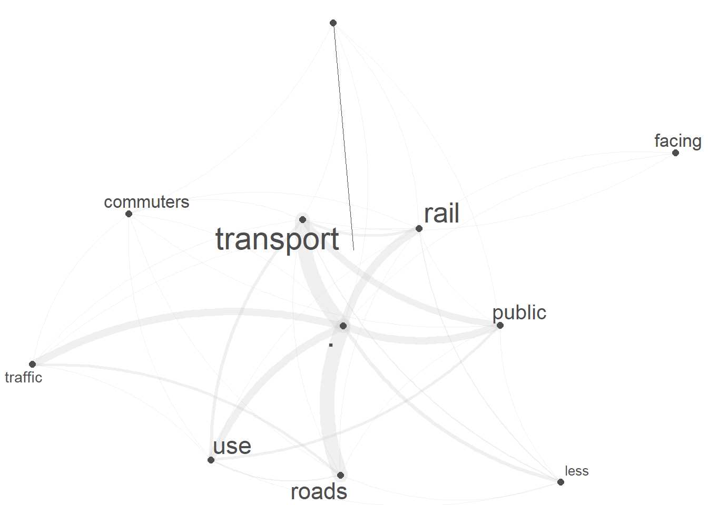

Analyzing learner language using R
Introduction
This tutorial focuses on learner language and how to analyze differences between learners and L1 speakers of English using R. The aim of this tutorial is to showcase how to extract information from essays from learners and L1 speakers of English and how to analyze these essays. The aim is not to provide a fully-fledged analysis but rather to show and exemplify some common methods for data extraction, processing, and analysis.
The entire R Notebook for the tutorial can be downloaded here. If you want to render the R Notebook on your machine, i.e. knitting the document to html or a pdf, you need to make sure that you have R and RStudio installed and you also need to download the bibliography file and store it in the same folder where you store the Rmd file.
Here is a link to an interactive version of this tutorial on Google Colab. The interactive tutorial is based on a Jupyter notebook of this tutorial. This interactive Jupyter notebook allows you to execute code yourself and - if you copy the Jupyter notebook - you can also change and edit the notebook, e.g. you can change code and upload your own data.
Preparation and session set up
This tutorial is based on R. If you have not installed R or are new to it, you will find an introduction to and more information how to use R here. For this tutorials, we need to install certain packages from an R library so that the scripts shown below are executed without errors. Before turning to the code below, please install the packages by running the code below this paragraph. If you have already installed the packages mentioned below, then you can skip ahead and ignore this section. To install the necessary packages, simply run the following code - it may take some time (between 1 and 5 minutes to install all of the packages so you do not need to worry if it takes some time).
# install packages
install.packages("quanteda")
install.packages("flextable")
install.packages("quanteda.textstats")
install.packages("quanteda.textplots")
install.packages("tidyverse")
install.packages("tm")
install.packages("tidytext")
install.packages("tidyr")
install.packages("NLP")
install.packages("openNLP")
install.packages("openNLPdata")
install.packages("koRpus")
install.packages("stringi")
install.packages("hunspell")
install.packages("wordcloud2")
install.packages("pacman")
# install the language support package
koRpus::install.koRpus.lang("en")
# install klippy for copy-to-clipboard button in code chunks
install.packages("remotes")
remotes::install_github("rlesur/klippy")Now that we have installed the packages, we can activate them as shown below.
# set options
options(stringsAsFactors = F)
options(scipen = 999)
options(max.print=1000)
options(java.parameters = c("-XX:+UseConcMarkSweepGC", "-Xmx8192m"))
#gc()
# load packages
library(tidyverse)
library(flextable)
library(tm)
library(tidytext)
library(tidyr)
library(NLP)
library(openNLP)
library(quanteda)
library(quanteda.textstats)
library(quanteda.textplots)
library(koRpus)
library(koRpus.lang.en)
library(stringi)
library(hunspell)
library(wordcloud2)
library(pacman)
pacman::p_load_gh("trinker/entity")
# activate klippy for copy-to-clipboard button
klippy::klippy()Once you have installed R and RStudio and once you have also initiated the session by executing the code shown above, you are good to go.
Loading data
We use 7 essays written by learners from the International Corpus of Learner English (ICLE) and two files containing a-level essays written by L1-English British students from The Louvain Corpus of Native English Essays (LOCNESS) which was compiled by the Centre for English Corpus Linguistics (CECL), Université catholique de Louvain, Belgium. The code chunk below loads the data from the LADAL repository on GitHub into R.
# load essays from l1 speakers
ns1 <- base::readRDS(url("https://slcladal.github.io/data/LCorpus/ns1.rda", "rb"))
ns2 <- base::readRDS(url("https://slcladal.github.io/data/LCorpus/ns2.rda", "rb"))
# load essays from l2 speakers
es <- base::readRDS(url("https://slcladal.github.io/data/LCorpus/es.rda", "rb"))
de <- base::readRDS(url("https://slcladal.github.io/data/LCorpus/de.rda", "rb"))
fr <- base::readRDS(url("https://slcladal.github.io/data/LCorpus/fr.rda", "rb"))
it <- base::readRDS(url("https://slcladal.github.io/data/LCorpus/it.rda", "rb"))
pl <- base::readRDS(url("https://slcladal.github.io/data/LCorpus/pl.rda", "rb"))
ru <- base::readRDS(url("https://slcladal.github.io/data/LCorpus/ru.rda", "rb"))
# inspect
ru %>%
# remove header
stringr::str_remove(., "<[A-Z]{4,4}.*") %>%
# remove empty elements
na_if("") %>%
na.omit %>%
#show first 3 elements
head(3)[1] "It is now a very wide spread opinion, that in the modern world there is no place for dreaming and imagination. Those who share this point of view usually say that at present we are so very much under the domination of science, industry, technology, ever-increasing tempo of our lives and so on, that neither dreaming nor imagination can possibly survive. Their usual argument is very simple - they suggest to their opponents to look at some samples of the modern art and to compare them to the masterpieces of the \"Old Masters\" of painting, music, literature."
[2] "As everything which is simple, the argument sounds very convincing. Of course, it is evident, that no modern writer, painter or musician can be compare to such names as Bach, Pushkin< Byron, Mozart, Rembrandt, Raffael et cetera. Modern pictures, in the majority of cases, seem to be merely repetitions or combinations of the images and methods of painting, invented very long before. The same is also true to modern verses, novels and songs."
[3] "But, I think, those, who put forward this argument, play - if I may put it like this - not fair game with their opponents, because such an approach presupposes the firm conviction, that dreaming and imagination can deal only with Arts, moreover, only with this \"well-established set\" of Arts, which includes music, painting, architecture, sculpture and literature. That is, a person, who follows the above-mentioned point of view tries to make his opponent take for granted the statement, the evidence of which is, to say the least, doubtful." The data inspection shows the first 3 text elements from the essay written a Russian learner of English to provide an idea of what the data look like.
Now that we have loaded some data, we can go ahead and extract information from the texts and process the data to analyze differences between L1 speakers and learners of English.
Concordancing
Concordancing refers to the extraction of words or phrases from a given text or texts [1]. Commonly, concordances are displayed in the form of key-word in contexts (KWIC) where the search term is shown with some preceding and following context. Thus, such displays are referred to as key word in context concordances. A more elaborate tutorial on how to perform concordancing with R is available here.
Concordancing is helpful for seeing how a given term or phrased is used in the data, for inspecting how often a given word occurs in a text or a collection of texts, for extracting examples, and it also represents a basic procedure, and often the first step, in more sophisticated analyses.
We begin by creating KWIC displays of the term problem as shown below. To extract the kwic concordances, we use the kwic function from the quanteda package [cf. 2].
# combine data from l1 speakers
l1 <- c(ns1, ns2)
# combine data from learners
learner <- c(de, es, fr, it, pl, ru)
# extract kwic for term "problem" in learner data
kwic <- quanteda::kwic(learner, # the data in which to search
pattern = "problem.*", # the pattern to look for
valuetype = "regex", # look for exact matches or patterns
window = 10) %>% # how much context to display (in elements)
# convert to table (called data.frame in R)
as.data.frame() %>%
# remove superfluous columns
dplyr::select(-to, -from, -pattern)
# inspect
head(kwic) docname pre keyword
1 text12 Many of the drug addits have legal problems
2 text12 countries , like Spain , illegal . They have social problems
3 text30 In our society there is a growing concern about the problem
4 text33 that once the availability of guns has been removed the problem
5 text33 honest way and remove any causes that could worsen a problem
6 text34 violence in our society . In order to analise the problem
post
1 because they steal money for buying the drug that is
2 too because people are afraid of them and the drug
3 of violent crime . In fact , particular attention is
4 of violence simply vanishes , but in this caotic situation
5 which is already particularly serious .
6 in its complexity and allow people to live in aThe output shows that the term problem occurs six times in the learner data.
We can also arrange the output according to what comes before or after the search term as shown below.
# take kwic
kwic %>%
# arrange kwic alphabetically by what comes after the key term
dplyr::arrange(post) docname pre keyword
1 text12 Many of the drug addits have legal problems
2 text39 , greatest ideas were produced and solutions to many serious problems
3 text34 violence in our society . In order to analise the problem
4 text33 that once the availability of guns has been removed the problem
5 text30 In our society there is a growing concern about the problem
6 text12 countries , like Spain , illegal . They have social problems
7 text33 honest way and remove any causes that could worsen a problem
post
1 because they steal money for buying the drug that is
2 found . Most wonderful pieces of literature were created in
3 in its complexity and allow people to live in a
4 of violence simply vanishes , but in this caotic situation
5 of violent crime . In fact , particular attention is
6 too because people are afraid of them and the drug
7 which is already particularly serious .# take quick
kwic %>%
# reverse the preceding context
dplyr::mutate(prerev = stringi::stri_reverse(pre)) %>%
# arrange kwic alphabetically by reversed preceding context
dplyr::arrange(prerev) %>%
# remove column with reversed preceding context
dplyr::select(-prerev) docname pre keyword
1 text33 honest way and remove any causes that could worsen a problem
2 text33 that once the availability of guns has been removed the problem
3 text34 violence in our society . In order to analise the problem
4 text30 In our society there is a growing concern about the problem
5 text12 Many of the drug addits have legal problems
6 text12 countries , like Spain , illegal . They have social problems
7 text39 , greatest ideas were produced and solutions to many serious problems
post
1 which is already particularly serious .
2 of violence simply vanishes , but in this caotic situation
3 in its complexity and allow people to live in a
4 of violent crime . In fact , particular attention is
5 because they steal money for buying the drug that is
6 too because people are afraid of them and the drug
7 found . Most wonderful pieces of literature were created inWe can also combine concordancing with visualizations. For instance, use the textplot_xray function from the quanteda.textplots package to visualize where in some texts the term people and the term imagination occurs.
# create kwics for people and imagination
kwic_people <- quanteda::kwic(learner, pattern = c("people", "imagination"))
# generate x-ray plot
quanteda.textplots::textplot_xray(kwic_people)
We can also search for phrases rather than individual words. To do this, we need to use the phrase function in the pattern argument as shown below. In the code chunk below, we look for any combination of the word very and any following word. It we would wish, we could of course also sort (or order) the concordances as we have done above.
# generate kwic for phrases staring with very
kwic <- quanteda::kwic(learner, # data
pattern = phrase("^very [a-z]{1,}"), # search pattern
valuetype = "regex") %>% # type of pattern
# convert into a data frame
as.data.frame()docname | from | to | pre | keyword | post | pattern |
text3 | 193 | 194 | in black trousers and only | very seldom | in skirts , because she | ^very [a-z]{1,} |
text4 | 9 | 10 | is admirable is that she's | very active | in doing sports and that | ^very [a-z]{1,} |
text4 | 27 | 28 | managed by her in a | very simple | way . She's very interested | ^very [a-z]{1,} |
text4 | 32 | 33 | very simple way . She's | very interested | in cycling , swimming and | ^very [a-z]{1,} |
text5 | 3 | 4 | She's also | very intelligent | and because of that she | ^very [a-z]{1,} |
Frequency lists
A useful procedure when dealing with texts is to extract frequency information. To exemplify how to extract frequency lists from texts, we will do this here using the L1 data.
ftb <- c(ns1, ns2) %>%
# remove punctuation
stringr::str_replace_all(., "\\W", " ") %>%
# remove superfluous white spaces
stringr::str_squish() %>%
# convert to lower case
tolower() %>%
# split into words
stringr::str_split(" ") %>%
# unlist
unlist() %>%
# convert into table
as.data.frame() %>%
# rename column
dplyr::rename(word = 1) %>%
# remove empty rows
dplyr::filter(word != "") %>%
# count words
dplyr::group_by(word) %>%
dplyr::summarise(freq = n()) %>%
# order by freq
dplyr::arrange(-freq)
# inspect
head(ftb)# A tibble: 6 × 2
word freq
<chr> <int>
1 the 650
2 to 373
3 of 320
4 and 283
5 is 186
6 a 176We can easily remove stop words (words without lexical content) using the anti_join function as shown below.
ftb_wosw <- ftb %>%
# remove stop words
dplyr::anti_join(stop_words)
# inspect
head(ftb_wosw)# A tibble: 6 × 2
word freq
<chr> <int>
1 transport 98
2 people 85
3 roads 80
4 cars 69
5 road 51
6 system 50We can then visualize the results as a bar chart as shown below.
ftb_wosw %>%
# take 20 most frequent terms
head(20) %>%
# generate a plot
ggplot(aes(x = reorder(word, -freq), y = freq, label = freq)) +
# define type of plot
geom_bar(stat = "identity") +
# add labels
geom_text(vjust=1.6, color = "white") +
# display in black-and-white theme
theme_bw() +
# adapt x-axis tick labels
theme(axis.text.x = element_text(size=8, angle=90)) +
# adapt axes labels
labs(y = "Frequnecy", x = "Word")Or we can visualize the data as a word cloud (see below).
# create wordcloud
wordcloud2(ftb_wosw[1:100,], # define data to use
# define shape
shape = "diamond",
# define colors
color = scales::viridis_pal()(8))Splitting texts into sentences
It can be every useful to split texts into individual sentences. This can be done, e.g., to extract the average sentence length or simply to inspect or annotate individual sentences. To split a text into sentences, we clean the data by removing file identifiers and html tags as well as quotation marks within sentences. As we are dealing with several texts, we write a function that performs this task and that we can then apply to the individual texts.
cleanText <- function(x,...){
require(tokenizers)
# paste text together
x <- paste0(x)
# remove file identifiers
x <- stringr::str_remove_all(x, "<.*?>")
# remove quotation marks
x <- stringr::str_remove_all(x, fixed("\""))
# remove empty elements
x <- x[!x==""]
# split text into sentences
x <- tokenize_sentences(x)
x <- unlist(x)
}
# clean texts
ns1_sen <- cleanText(ns1)
ns2_sen <- cleanText(ns2)
de_sen <- cleanText(de)
es_sen <- cleanText(es)
fr_sen <- cleanText(fr)
it_sen <- cleanText(it)
pl_sen <- cleanText(pl)
ru_sen <- cleanText(ru). |
It is now a very wide spread opinion, that in the modern world there is no place for dreaming and imagination. |
Those who share this point of view usually say that at present we are so very much under the domination of science, industry, technology, ever-increasing tempo of our lives and so on, that neither dreaming nor imagination can possibly survive. |
Their usual argument is very simple - they suggest to their opponents to look at some samples of the modern art and to compare them to the masterpieces of the Old Masters of painting, music, literature. |
As everything which is simple, the argument sounds very convincing. |
Of course, it is evident, that no modern writer, painter or musician can be compare to such names as Bach, Pushkin< Byron, Mozart, Rembrandt, Raffael et cetera. |
Now that we have split the texts into individual sentences, we can easily extract and visualize the average sentence lengths of L1 speakers and learners of English.
Sentence length
The most basic complexity measure is average sentence length. In the following, we will extract the average sentence length for L1-speakers and learners of English with different language backgrounds.
We can use the count_words function from the tokenizers package to count the words in each sentence. We apply the function to all texts and generate a table (a data frame) of the results and add the L1 of the speaker who produced the sentence.
# extract sentences lengths
ns1_sl <- tokenizers::count_words(ns1_sen)
ns2_sl <- tokenizers::count_words(ns2_sen)
de_sl <- tokenizers::count_words(de_sen)
es_sl <- tokenizers::count_words(es_sen)
fr_sl <- tokenizers::count_words(fr_sen)
it_sl <- tokenizers::count_words(it_sen)
pl_sl <- tokenizers::count_words(pl_sen)
ru_sl <- tokenizers::count_words(ru_sen)
# create a data frame from the results
sl_df <- data.frame(c(ns1_sl, ns2_sl, de_sl, es_sl, fr_sl, it_sl, pl_sl, ru_sl)) %>%
dplyr::rename(sentenceLength = 1) %>%
dplyr::mutate(l1 = c(rep("en", length(ns1_sl)),
rep("en", length(ns2_sl)),
rep("de", length(de_sl)),
rep("es", length(es_sl)),
rep("fr", length(fr_sl)),
rep("it", length(it_sl)),
rep("pl", length(pl_sl)),
rep("ru", length(ru_sl))))sentenceLength | l1 |
2 | en |
17 | en |
23 | en |
17 | en |
20 | en |
34 | en |
Now, we can use the resulting table to create a box plot showing the results.
sl_df %>%
ggplot(aes(x = reorder(l1, -sentenceLength, mean), y = sentenceLength, fill = l1)) +
geom_boxplot() +
# adapt y-axis labels
labs(y = "Sentence lenghts") +
# adapt tick labels
scale_x_discrete("L1 of learners",
breaks = names(table(sl_df$l1)),
labels = c("en" = "English",
"de" = "German",
"es" = "Spanish",
"fr" = "French",
"it" = "Italian",
"pl" = "Polish",
"ru" = "Russian")) +
theme_bw() +
theme(legend.position = "none")Extracting N-grams
In a next step, we extract n-grams using the tokens_ngrams function from the quanteda package. In a first step, we take the sentence data, convert it to lower case and remove punctuation. Then we apply the tokens_ngrams function to extract the n-grams (in this case 2-grams).
ns1_tok <- ns1_sen %>%
tolower() %>%
quanteda::tokens(remove_punct = TRUE)
# extract n-grams
ns1_2gram <- quanteda::tokens_ngrams(ns1_tok, n = 2)
# inspect
head(ns1_2gram[[2]], 10) [1] "the_basic" "basic_dilema" "dilema_facing" "facing_the"
[5] "the_uk's" "uk's_rail" "rail_and" "and_road"
[9] "road_transport" "transport_system"We can also extract tri-grams easily by changing the n argument in the tokens_ngrams function.
# extract n-grams
ns1_3gram <- quanteda::tokens_ngrams(ns1_tok, n = 3)
# inspect
head(ns1_3gram[[2]])[1] "the_basic_dilema" "basic_dilema_facing" "dilema_facing_the"
[4] "facing_the_uk's" "the_uk's_rail" "uk's_rail_and" We now apply the same procedure to all texts as shown below.
ns1_tok <- ns1_sen %>% tolower() %>% quanteda::tokens(remove_punct = TRUE)
ns2_tok <- ns2_sen %>% tolower() %>% quanteda::tokens(remove_punct = TRUE)
de_tok <- de_sen %>% tolower() %>% quanteda::tokens(remove_punct = TRUE)
es_tok <- es_sen %>% tolower() %>% quanteda::tokens(remove_punct = TRUE)
fr_tok <- fr_sen %>% tolower() %>% quanteda::tokens(remove_punct = TRUE)
it_tok <- it_sen %>% tolower() %>% quanteda::tokens(remove_punct = TRUE)
pl_tok <- pl_sen %>% tolower() %>% quanteda::tokens(remove_punct = TRUE)
ru_tok <- ru_sen %>% tolower() %>% quanteda::tokens(remove_punct = TRUE)
# extract n-grams
ns1_2gram <- as.vector(unlist(quanteda::tokens_ngrams(ns1_tok, n = 2)))
ns2_2gram <- as.vector(unlist(quanteda::tokens_ngrams(ns2_tok, n = 2)))
de_2gram <- as.vector(unlist(quanteda::tokens_ngrams(de_tok, n = 2)))
es_2gram <- as.vector(unlist(quanteda::tokens_ngrams(es_tok, n = 2)))
fr_2gram <- as.vector(unlist(quanteda::tokens_ngrams(fr_tok, n = 2)))
it_2gram <- as.vector(unlist(quanteda::tokens_ngrams(it_tok, n = 2)))
pl_2gram <- as.vector(unlist(quanteda::tokens_ngrams(pl_tok, n = 2)))
ru_2gram <- as.vector(unlist(quanteda::tokens_ngrams(ru_tok, n = 2)))Next, we generate a table with the ngrams and the L1 background of the speaker that produced the bi-grams.
ngram_df <- c(ns1_2gram, ns2_2gram, de_2gram, es_2gram,
fr_2gram, it_2gram, pl_2gram, ru_2gram) %>%
as.data.frame() %>%
dplyr::rename(ngram = 1) %>%
dplyr::mutate(l1 = c(rep("en", length(ns1_2gram)),
rep("en", length(ns2_2gram)),
rep("de", length(de_2gram)),
rep("es", length(es_2gram)),
rep("fr", length(fr_2gram)),
rep("it", length(it_2gram)),
rep("pl", length(pl_2gram)),
rep("ru", length(ru_2gram))),
learner = ifelse(l1 == "en", "no", "yes"))
# inspect
head(ngram_df) ngram l1 learner
1 transport_01 en no
2 the_basic en no
3 basic_dilema en no
4 dilema_facing en no
5 facing_the en no
6 the_uk's en noNow, we process the table further to add frequency information, i.e., how often a given n-gram occurs in each the language of speakers with distinct L1 backgrounds.
ngram_fdf <- ngram_df %>%
dplyr::group_by(ngram, learner) %>%
dplyr::summarise(freq = n()) %>%
dplyr::arrange(-freq)
# inspect
head(ngram_fdf)# A tibble: 6 × 3
# Groups: ngram [5]
ngram learner freq
<chr> <chr> <int>
1 of_the no 72
2 to_the no 40
3 in_the no 39
4 public_transport no 35
5 of_the yes 33
6 number_of no 32As the word counts of the texts are quite different, we normalize the frequencies to per-1,000-word frequencies which are comparable across texts of different lengths.
ngram_nfdf <- ngram_fdf %>%
dplyr::group_by(ngram) %>%
dplyr::mutate(total_ngram = sum(freq)) %>%
dplyr::arrange(-total_ngram) %>%
# total by learner
dplyr::group_by(learner) %>%
dplyr::mutate(total_learner = sum(freq),
rfreq = freq/total_learner*1000)
# inspect
head(ngram_nfdf, 10)# A tibble: 10 × 6
# Groups: learner [2]
ngram learner freq total_ngram total_learner rfreq
<chr> <chr> <int> <int> <int> <dbl>
1 of_the no 72 105 9452 7.62
2 of_the yes 33 105 3395 9.72
3 in_the no 39 49 9452 4.13
4 in_the yes 10 49 3395 2.95
5 to_the no 40 47 9452 4.23
6 to_the yes 7 47 3395 2.06
7 it_is no 23 44 9452 2.43
8 it_is yes 21 44 3395 6.19
9 public_transport no 35 35 9452 3.70
10 number_of no 32 35 9452 3.39We now reformat the table so that we have relative frequencies for both learners and L1 speakers even if a particular n-gram does not occur in the text produced by either a learner or a L1 speaker.
ngram_rel <- ngram_nfdf %>%
dplyr::select(ngram, learner, rfreq, total_ngram) %>%
tidyr::spread(learner, rfreq) %>%
dplyr::mutate(no = ifelse(is.na(no), 0, no),
yes = ifelse(is.na(yes), 0, yes)) %>%
tidyr::gather(learner, rfreq, no:yes) %>%
dplyr::arrange(-total_ngram)
# inspect
head(ngram_rel)# A tibble: 6 × 4
ngram total_ngram learner rfreq
<chr> <int> <chr> <dbl>
1 of_the 105 no 7.62
2 of_the 105 yes 9.72
3 in_the 49 no 4.13
4 in_the 49 yes 2.95
5 to_the 47 no 4.23
6 to_the 47 yes 2.06Finally, we visualize the most frequent n-grams in the data in a bar chart.
ngram_rel %>%
head(20) %>%
ggplot(aes(y = rfreq, x = reorder(ngram, -total_ngram), group = learner, fill = learner)) +
geom_bar(stat = "identity", position = position_dodge()) +
theme_bw() +
theme(axis.text.x = element_text(size=8, angle=90),
legend.position = "top") +
labs(y = "Relative frequnecy\n(per 1,000 words)", x = "n-gram")We can, of course also investigate only specific n-grams, e.g., n-grams containing a specific word such as public (below, we only show the first 6 n-grams containing public by using the head function).
ngram_rel %>%
dplyr::filter(stringr::str_detect(ngram, "public")) %>%
head()# A tibble: 6 × 4
ngram total_ngram learner rfreq
<chr> <int> <chr> <dbl>
1 public_transport 35 no 3.70
2 public_transport 35 yes 0
3 use_public 10 no 1.06
4 use_public 10 yes 0
5 of_public 6 no 0.635
6 of_public 6 yes 0 We can also specify the order by adding the underscore as shown below.
ngram_rel %>%
dplyr::filter(stringr::str_detect(ngram, "public_")) %>%
head()# A tibble: 6 × 4
ngram total_ngram learner rfreq
<chr> <int> <chr> <dbl>
1 public_transport 35 no 3.70
2 public_transport 35 yes 0
3 public_action 1 no 0.106
4 public_and 1 no 0.106
5 public_awareness 1 no 0.106
6 public_opposition 1 no 0.106Differences in ngram use
Next, we will set out to identify differences in n-gram frequencies between learners and L1 speakers. In a first step, we transform the table so that we have separate columns for learners and L1-speakers. In addition, we also add columns containing all the information we need to perform Fisher’s exact test to check if learners use certain n-grams significantly more or less frequently compared to L1-speakers.
sdif_ngram <- ngram_fdf %>%
tidyr::spread(learner, freq) %>%
dplyr::mutate(no = ifelse(is.na(no), 0, no),
yes = ifelse(is.na(yes), 0, yes)) %>%
dplyr::rename(l1speaker = no,
learner = yes) %>%
dplyr::mutate(total_ngram = l1speaker+learner) %>%
dplyr::ungroup() %>%
dplyr::mutate(total_learner = sum(learner),
total_l1 = sum(l1speaker)) %>%
dplyr::mutate(a = l1speaker,
b = learner) %>%
dplyr::mutate(c = total_l1-a,
d = total_learner-b)
# inspect
head(sdif_ngram)# A tibble: 6 × 10
ngram l1speaker learner total_ngram total_learner total_l1 a b c
<chr> <dbl> <dbl> <dbl> <dbl> <dbl> <dbl> <dbl> <dbl>
1 -to_cr… 1 0 1 3395 9452 1 0 9451
2 `_t 0 1 1 3395 9452 0 1 9452
3 +_even 1 0 1 3395 9452 1 0 9451
4 +_peop… 1 0 1 3395 9452 1 0 9451
5 <_byron 0 1 1 3395 9452 0 1 9452
6 £_1mil… 1 0 1 3395 9452 1 0 9451
# … with 1 more variable: d <dbl>On this re-arranged data set, we can now apply the Fisher’s exact tests. As we are performing many different tests, we need to correct for multiple comparisons. To this end, we create a column which holds the Bonferroni corrected critical value (.05). If a p-value is lower than the corrected critical value, then the learners and L1-speakers differ significantly in their use of that n-gram.
sdif_ngram <- sdif_ngram %>%
# perform fishers exact test and extract estimate and p
dplyr::rowwise() %>%
dplyr::mutate(fisher_p = fisher.test(matrix(c(a,c,b,d), nrow= 2))$p.value,
oddsratio = fisher.test(matrix(c(a,c,b,d), nrow= 2))$estimate,
# calculate bonferroni correction
crit = .05/nrow(.),
sig_corr = ifelse(fisher_p < crit, "p<.05", "n.s.")) %>%
dplyr::arrange(fisher_p) %>%
dplyr::select(-total_ngram, -total_learner, -total_l1, -a, -b, -c, -d, -crit)
# inspect
head(sdif_ngram)# A tibble: 6 × 6
# Rowwise:
ngram l1speaker learner fisher_p oddsratio sig_corr
<chr> <dbl> <dbl> <dbl> <dbl> <chr>
1 in_silence 0 8 0.0000236 0 n.s.
2 public_transport 35 0 0.0000276 Inf n.s.
3 silence_is 0 7 0.0000896 0 n.s.
4 of_all 0 6 0.000339 0 n.s.
5 our_society 0 6 0.000339 0 n.s.
6 in_our 0 5 0.00129 0 n.s. In our case, there are no n-grams that differ significantly in their use by learners and L1-speakers once we have corrected for repeated testing as indicated by the n.s. (not significant) in the column called sig_corr.
Finding collocations
There are various techniques for identifying collocations. To identify collocations without having a pre-defined target term, we can use the textstat_collocations function from the quanteda.textstats package [cf. 3].
However, before we can apply that function and start identifying collocations, we need to process the data to which we want to apply this function. In the present case, we will apply that function to the sentences in the L1 data which we extract in the code chunk below.
ns_sen <- c(ns1_sen, ns2_sen) %>%
tolower(). |
transport 01 |
the basic dilema facing the uk's rail and road transport system is the general rise in population. |
this leads to an increase in the number of commuters and transport users every year, consequently putting pressure on the uks transports network. |
the biggest worry to the system is the rapid rise of car users outside the major cities. |
most large cities have managed to incourage commuters to use public transport thus decreasing major conjestion in rush hour periods. |
public transport is the obvious solution to to the increase in population if it is made cheep to commuters, clean, easy and efficient then it could take the strain of the overloaded british roads. |
From the output shown above, we also see that splitting texts did not work perfectly as it produces some unwarranted artifacts like the “sentences” that consist of headings (e.g., transport 01). Fortunately, these errors do not really matter in the case of our example.
Now that we have the L1 data split into sentences, we can tokenize these sentences and apply the textstat_collocations function which identifies collocations.
# create a token object
ns_tokens <- quanteda::tokens(ns_sen, remove_punct = TRUE)# %>%
# tokens_remove(stopwords("english"))
# extract collocations
ns_coll <- quanteda.textstats::textstat_collocations(ns_tokens, size = 2, min_count = 20)collocation | count | count_nested | length | lambda | z |
public transport | 35 | 0 | 2 | 7.170227 | 14.89924 |
it is | 23 | 0 | 2 | 3.119043 | 12.15265 |
of the | 72 | 0 | 2 | 1.617862 | 11.45624 |
to use | 21 | 0 | 2 | 3.458612 | 10.59222 |
number of | 32 | 0 | 2 | 5.693830 | 10.06386 |
on the | 31 | 0 | 2 | 2.103127 | 9.43355 |
The resulting table shows collocations in L1 data descending by collocation strength.
Visualizing collocation networks
Network graphs are a very useful and flexible tool for visualizing relationships between elements such as words, personas, or authors. This section shows how to generate a network graph for collocations of the term transport using the quanteda package.
In a first step, we generate a document-feature matrix based on the sentences in the L1 data. A document-feature matrix shows how often elements (here these elements are the words that occur in the L1 data) occur in a selection of documents (here these documents are the sentences in the L1 data).
# create document-feature matrix
ns_dfm <- ns_sen %>%
#quanteda::dfm(remove_punct = TRUE) %>%
quanteda::dfm(remove = stopwords('english'), remove_punct = TRUE)# %>%
#quanteda::dfm_trim(min_termfreq = 10, verbose = FALSE)doc_id | transport | 01 | basic | dilema | facing | uk's |
text1 | 1 | 1 | 0 | 0 | 0 | 0 |
text2 | 1 | 0 | 1 | 1 | 1 | 1 |
text3 | 1 | 0 | 0 | 0 | 0 | 0 |
text4 | 0 | 0 | 0 | 0 | 0 | 0 |
text5 | 1 | 0 | 0 | 0 | 0 | 0 |
text6 | 1 | 0 | 0 | 0 | 0 | 0 |
As we want to generate a network graph of words that collocate with the term organism, we use the calculateCoocStatistics function to determine which words most strongly collocate with our target term (organism).
# load function for co-occurrence calculation
source("https://slcladal.github.io/rscripts/calculateCoocStatistics.R")
# define term
coocTerm <- "transport"
# calculate co-occurrence statistics
coocs <- calculateCoocStatistics(coocTerm, ns_dfm, measure="LOGLIK")
# inspect results
coocs[1:10] public use traffic rail facing commuters cheaper
113.171974 19.437311 10.508626 9.652830 9.382889 9.382889 9.382889
roads less buses
9.080648 8.067363 6.702863 We now reduce the document-feature matrix to contain only the top 20 collocates of transport (plus our target word transport).
redux_dfm <- dfm_select(ns_dfm,
pattern = c(names(coocs)[1:10], "transport"))doc_id | transport | facing | rail | commuters | use | public |
text1 | 1 | 0 | 0 | 0 | 0 | 0 |
text2 | 1 | 1 | 1 | 0 | 0 | 0 |
text3 | 1 | 0 | 0 | 1 | 0 | 0 |
text4 | 0 | 0 | 0 | 0 | 0 | 0 |
text5 | 1 | 0 | 0 | 1 | 1 | 1 |
text6 | 1 | 0 | 0 | 1 | 0 | 1 |
Now, we can transform the document-feature matrix into a feature-co-occurrence matrix as shown below. A feature-co-occurrence matrix shows how often each element in that matrix co-occurs with every other element in that matrix.
tag_fcm <- fcm(redux_dfm)doc_id | transport | facing | rail | commuters | use | public |
transport | 3 | 4 | 17 | 4 | 18 | 38 |
facing | 0 | 0 | 2 | 0 | 0 | 0 |
rail | 0 | 0 | 5 | 1 | 4 | 2 |
commuters | 0 | 0 | 0 | 0 | 1 | 2 |
use | 0 | 0 | 0 | 0 | 0 | 16 |
public | 0 | 0 | 0 | 0 | 0 | 1 |
Using the feature-co-occurrence matrix, we can generate the network graph which shows the terms that collocate with the target term transport with the edges representing the co-occurrence frequency. To generate this network graph, we use the textplot_network function from the quanteda.textplots package.
# generate network graph
quanteda.textplots::textplot_network(tag_fcm,
min_freq = 1,
edge_alpha = 0.3,
edge_size = 5,
edge_color = "gray80",
vertex_labelsize = log(rowSums(tag_fcm)*15))
Part-of-speech tagging
Part-of-speech tagging is a very useful procedure for many analyses. Here, we automatically identify parts of speech (word classes) in the text which, for a well-studied language like English, is approximately 95% accurate.
The code chunk below defines a function which applies this kind of tagging to any text fed into the function.
POStag <- function(x){
# load necessary packages
require("stringr")
require("NLP")
require("openNLP")
# define annotators
sent_token_annotator <- openNLP::Maxent_Sent_Token_Annotator()
word_token_annotator <- openNLP::Maxent_Word_Token_Annotator()
pos_tag_annotator <- openNLP::Maxent_POS_Tag_Annotator(language = "en", probs = FALSE)
# convert all file content to strings
strings <- lapply(x, function(x){
x <- as.String(x) })
# loop over file contents
sapply(strings, function(x){
a <- NLP::annotate(x, list(sent_token_annotator, word_token_annotator))
p <- NLP::annotate(x, pos_tag_annotator, a)
w <- subset(p, type == "word")
tags <- sapply(w$features, '[[', "POS")
as <- sprintf("%s/%s", x[w], tags)
at <- paste(as, collapse = " ")
return(at)
})
}We now apply this function to a test sentence to see if the function does what we want it to and to check the output format.
# generate test text
text <- "It is now a very wide spread opinion, that in the modern world there is no place for dreaming and imagination."
# apply pos-tag function to test text
tagged_text <- POStag(text)
# inspect result
tagged_text[1] "It/PRP is/VBZ now/RB a/DT very/RB wide/JJ spread/NN opinion/NN ,/, that/IN in/IN the/DT modern/JJ world/NN there/EX is/VBZ no/DT place/NN for/IN dreaming/VBG and/CC imagination/NN ./."The tags which you see here are from the tag set developed for the Penn Treebank, a corpus of English text with syntactic annotations. The tags are not always transparent, and this is very much the case for the word class we will be looking at - the tag for an adjective is /JJ!
The next step, we write a function that will clean our texts by removing tags and quotation marks as well as superfluous white spaces.
comText <- function(x,...){
# paste text together
x <- paste0(x)
# remove file identifiers
x <- stringr::str_remove_all(x, "<.*?>")
# remove quotation marks
x <- stringr::str_remove_all(x, fixed("\""))
# remove superfluous white spaces
x <- stringr::str_squish(x)
# remove empty elements
x <- x[!x==""]
}Now we apply the text cleaning function to the texts.
# combine texts
ns1_com <- comText(ns1_sen)
ns2_com <- comText(ns2_sen)
de_com <- comText(de_sen)
es_com <- comText(es_sen)
fr_com <- comText(fr_sen)
it_com <- comText(it_sen)
pl_com <- comText(pl_sen)
ru_com <- comText(ru_sen)Now we apply the pos-tagging function to the texts.
# apply pos-tag function to data
ns1_pos <- as.vector(unlist(POStag(ns1_com)))
ns2_pos <- as.vector(unlist(POStag(ns2_com)))
de_pos <- as.vector(unlist(POStag(de_com)))
es_pos <- as.vector(unlist(POStag(es_com)))
fr_pos <- as.vector(unlist(POStag(fr_com)))
it_pos <- as.vector(unlist(POStag(it_com)))
pl_pos <- as.vector(unlist(POStag(pl_com)))
ru_pos <- as.vector(unlist(POStag(ru_com)))
# inspect
head(ns1_pos)[1] "Transport/NNP 01/CD"
[2] "The/DT basic/JJ dilema/NN facing/VBG the/DT UK/NNP 's/POS rail/NN and/CC road/NN transport/NN system/NN is/VBZ the/DT general/JJ rise/NN in/IN population/NN ./."
[3] "This/DT leads/VBZ to/TO an/DT increase/NN in/IN the/DT number/NN of/IN commuters/NNS and/CC transport/NN users/NNS every/DT year/NN ,/, consequently/RB putting/VBG pressure/NN on/IN the/DT UKs/NNP transports/VBZ network/NN ./."
[4] "The/DT biggest/JJS worry/NN to/TO the/DT system/NN is/VBZ the/DT rapid/JJ rise/NN of/IN car/NN users/NNS outside/IN the/DT major/JJ cities/NNS ./."
[5] "Most/JJS large/JJ cities/NNS have/VBP managed/VBN to/TO incourage/VB commuters/NNS to/TO use/VB public/JJ transport/NN thus/RB decreasing/VBG major/JJ conjestion/NN in/IN Rush/NNP hour/NN periods/NNS ./."
[6] "Public/NNP transport/NN is/VBZ the/DT obvious/JJ solution/NN to/TO to/TO the/DT increase/NN in/IN population/NN if/IN it/PRP is/VBZ made/VBN cheep/NN to/TO commuters/NNS ,/, clean/JJ ,/, easy/JJ and/CC efficient/JJ then/RB it/PRP could/MD take/VB the/DT strain/NN of/IN the/DT overloaded/VBN British/JJ roads/NNS ./."We end up with pos-tagged texts where the pos-tags are added to each word (or symbol).
In the following section, we will use these pos-tags to identify potential differences between learners and L1-speakers of English.
Differences in pos-sequences
To analyze differences in part-of-speech sequences between L1-speakers and learners of English,, we write a function that extracts pos-tag bigrams from the tagged texts.
# tokenize and extract pos tags
posngram <- function(x,...){
x <- x %>%
stringr::str_remove_all("\\w*/") %>%
quanteda::tokens(remove_punct = TRUE) %>%
quanteda::tokens_ngrams(n = 2) %>%
stringr::str_remove_all("-")
return(x)
}We now apply the function to the pos-tagged texts.
# apply pos-tag function to data
ns1_posng <- as.vector(unlist(posngram(ns1_pos)))
ns2_posng <- as.vector(unlist(posngram(ns2_pos)))
de_posng <- as.vector(unlist(posngram(de_pos)))
es_posng <- as.vector(unlist(posngram(es_pos)))
fr_posng <- as.vector(unlist(posngram(fr_pos)))
it_posng <- as.vector(unlist(posngram(it_pos)))
pl_posng <- as.vector(unlist(posngram(pl_pos)))
ru_posng <- as.vector(unlist(posngram(ru_pos)))
# inspect
head(ns1_posng)[1] "NNP_CD" "DT_JJ" "JJ_NN" "NN_VBG" "VBG_DT" "DT_NNP"In a next step, we tabulate the results and add a column telling us about the L1 background of the speakers who have produced the texts.
posngram_df <- c(ns1_posng, ns2_posng, de_posng, es_posng, fr_posng,
it_posng, pl_posng, ru_posng) %>%
as.data.frame() %>%
# rename column
dplyr::rename(ngram = 1) %>%
# add l1
dplyr::mutate(l1 = c(rep("en", length(ns1_posng)),
rep("en", length(ns2_posng)),
rep("de", length(de_posng)),
rep("es", length(es_posng)),
rep("fr", length(fr_posng)),
rep("it", length(it_posng)),
rep("pl", length(pl_posng)),
rep("ru", length(ru_posng))),
# add learner column
learner = ifelse(l1 == "en", "no", "yes")) %>%
# extract frequencies of ngrams
dplyr::group_by(ngram, learner) %>%
dplyr::summarise(freq = n()) %>%
dplyr::arrange(-freq)
# inspect
head(posngram_df)# A tibble: 6 × 3
# Groups: ngram [6]
ngram learner freq
<chr> <chr> <int>
1 DT_NN no 495
2 IN_DT no 418
3 NN_IN no 417
4 JJ_NN no 314
5 DT_JJ no 243
6 TO_VB no 237Next, we transform the table and add all the information that we need to perform the Fisher’s exact tests that we will use to determine if there are significant differences between L1 speakers and learners of English regarding their use of pos-sequences.
posngram_df2 <- posngram_df %>%
tidyr::spread(learner, freq) %>%
dplyr::mutate(no = ifelse(is.na(no), 0, no),
yes = ifelse(is.na(yes), 0, yes)) %>%
dplyr::rename(l1speaker = no,
learner = yes) %>%
dplyr::mutate(total_ngram = l1speaker+learner) %>%
dplyr::ungroup() %>%
dplyr::mutate(total_learner = sum(learner),
total_l1 = sum(l1speaker)) %>%
dplyr::mutate(a = l1speaker,
b = learner) %>%
dplyr::mutate(c = total_l1-a,
d = total_learner-b)
# inspect
head(posngram_df2)# A tibble: 6 × 10
ngram l1speaker learner total_ngram total_learner total_l1 a b c
<chr> <dbl> <dbl> <dbl> <dbl> <dbl> <dbl> <dbl> <dbl>
1 `_RB 0 1 1 3518 9621 0 1 9621
2 +_JJ 1 0 1 3518 9621 1 0 9620
3 +_RB 1 0 1 3518 9621 1 0 9620
4 <_NNP 0 1 1 3518 9621 0 1 9621
5 $_CC 0 1 1 3518 9621 0 1 9621
6 $_girl… 0 1 1 3518 9621 0 1 9621
# … with 1 more variable: d <dbl>On this re-arranged data set, we can now apply the Fisher’s exact tests. As we are performing many different tests, we need to correct for multiple comparisons. To this end, we create a column which holds the Bonferroni corrected critical value (.05). If a p-value is lower than the corrected critical value, then the learners and L1-speakers differ significantly in their use of that n-gram.
sdif_posngram <- posngram_df2 %>%
# perform fishers exact test and extract estimate and p
dplyr::rowwise() %>%
dplyr::mutate(fisher_p = fisher.test(matrix(c(a,c,b,d), nrow= 2))$p.value,
oddsratio = fisher.test(matrix(c(a,c,b,d), nrow= 2))$estimate,
# calculate bonferroni correction
crit = .05/nrow(.),
sig_corr = ifelse(fisher_p < crit, "p<.05", "n.s.")) %>%
dplyr::arrange(fisher_p) %>%
dplyr::select(-total_ngram, -a, -b, -c, -d, -crit)
# inspect
head(sdif_posngram)# A tibble: 6 × 8
# Rowwise:
ngram l1speaker learner total_learner total_l1 fisher_p oddsratio sig_corr
<chr> <dbl> <dbl> <dbl> <dbl> <dbl> <dbl> <chr>
1 PRP_VBZ 43 55 3518 9621 1.13e-9 0.283 p<.05
2 NN_NNS 121 10 3518 9621 4.43e-8 4.47 p<.05
3 $_NN 32 40 3518 9621 2.82e-7 0.290 p<.05
4 IN_PRP 93 72 3518 9621 3.15e-6 0.467 p<.05
5 PRP_$ 81 61 3518 9621 3.38e-5 0.481 p<.05
6 JJR_NNS 39 1 3518 9621 9.89e-5 14.3 n.s. We can now check and compare the use of the the pos-tagged sequences that differ significantly between learners and L1 speakers of English using simple concordancing. We begin by checking the use in the L1-data.
# combine l1 data
l1_pos <- c(ns1_pos, ns2_pos)
# combine l2 data
l2_pos <- c(de_pos, es_pos, fr_pos, it_pos, pl_pos, ru_pos)
# extract PRP_VBZ
PRP_VBZ_l1 <-quanteda::kwic(quanteda::tokens(l1_pos),
pattern = phrase("\\w* / PRP \\w* / VBZ"),
valuetype = "regex",
window = 10) %>%
as.data.frame() %>%
# remove superfluous columns
dplyr::select(-from, -to, -docname, -pattern)
# inspect results
head(PRP_VBZ_l1) pre keyword
1 NN in / IN population / NN if / IN it / PRP is / VBZ
2 DT concrete / JJ jungle / NN yet / CC it / PRP is / VBZ
3 NN centres / NNS during / IN rush / NN ours / PRP comes / VBZ
4 It / PRP removes / VBZ
5 It / PRP has / VBZ
6 It / PRP has / VBZ
post
1 made / VBN cheep / NN to / TO commuters
2 only / RB trying / VBG to / TO cope
3 to / TO a / DT near / JJ standstill
4 the / DT element / NN of / IN independence
5 given / VBN us / PRP the / DT freedom
6 reached / VBN the / DT stage / NN whereWe now turn to the learner data and also extract concordances for the same pos-sequence.
# extract PRP_VBZ
PRP_VBZ_l2 <-quanteda::kwic(quanteda::tokens(l2_pos),
pattern = phrase("\\w* / PRP \\w* / VBZ"),
valuetype = "regex",
window = 10) %>%
as.data.frame() %>%
# remove superfluous columns
dplyr::select(-from, -to, -docname, -pattern)
# inspect results
head(PRP_VBZ_l2) pre keyword
1 NN why / WRB I / PRP admire / VBP her / PRP is / VBZ
2 WRB you / PRP look / VBP at / IN her / PRP is / VBZ
3 She / PRP has / VBZ
4 $ shoulders / NNS and / CC usually / RB she / PRP wears / VBZ
5 She / PRP is / VBZ
6 IN skirts / NNS , / , because / IN she / PRP hates / VBZ
post
1 her / PRP $ beauty / NN . / .
2 really / RB brilliant / JJ . / .
3 glistening / VBG dark / JJ brown / JJ hair
4 a / DT hair / NN slide / NN or
5 always / RB well / RB dressed / VBN ,
6 wearing / VBG skirts / NNS and / CC tightsLexical diversity
Another common measure used to asses the development of language learns is vocabulary size. Vocabulary size can be assessed with various measures that represent lexical diversity. In the present case, we will extract
TTR: type-token ratioC: Herdan’s C (see [4]; sometimes referred to as LogTTR)R: Guiraud’s Root TTR (see [4])CTTR: Carroll’s Corrected TTRU: Dugast’s Uber Index (see [4])S: Summer’s indexMaas: Maas’ indices
The formulas showing how the lexical diversity measures are calculated as well as additional information about the lexical diversity measures can be found here.
While we will extract all of these scores, we will only visualize Carroll’s Corrected TTR to keep things simple.
\[\begin{equation} CTTR = \frac{N_{Types}}{\sqrt{2 N_{Tokens}}} \end{equation}\]
However, before we extract the lexical diversity measures, we split the data into individual essays.
cleanEss <- function(x){
x %>%
paste0(collapse = " ") %>%
stringr::str_split("Transport [0-9]{1,2}") %>%
unlist() %>%
stringr::str_squish() %>%
.[. != ""]
}
# apply function
ns1_ess <- cleanEss(ns1)
ns2_ess <- cleanEss(ns2)
de_ess <- cleanEss(de)
es_ess <- cleanEss(es)
fr_ess <- cleanEss(fr)
it_ess <- cleanEss(it)
pl_ess <- cleanEss(pl)
ru_ess <- cleanEss(ru)
# inspect
head(ns1_ess, 1)[1] "The basic dilema facing the UK's rail and road transport system is the general rise in population. This leads to an increase in the number of commuters and transport users every year, consequently putting pressure on the UKs transports network. The biggest worry to the system is the rapid rise of car users outside the major cities. Most large cities have managed to incourage commuters to use public transport thus decreasing major conjestion in Rush hour periods. Public transport is the obvious solution to to the increase in population if it is made cheep to commuters, clean, easy and efficient then it could take the strain of the overloaded British roads. For commuters who regularly travel long distances rail transport should be made more appealing, more comfortable and cheaper. Motorways and other transport links are constantly being extended, widened and slowly turning the country into a concrete jungle yet it is only trying to cope with the increase in traffic, we are our own enemy! Another major problem created by the mass of vehicle transport is the pollution emitted into the atmosphere damaging the ozone layer, creating smog and forming acid rain. Tourturing the Earth we are living on. In concluding I wish to propose clean, efficient comfortable and cheap public transport for the near future."In a next step, we can apply the lex.div function from the koRpus package which calculates the different lexical diversity measures for us.
# extract lex. div. measures
ns1_lds <- lapply(ns1_ess, function(x){
x <- koRpus::lex.div(x, force.lang = 'en', # define language
segment = 20, # define segment width
window = 20, # define window width
quiet = T,
# define lex div measures
measure=c("TTR", "C", "R", "CTTR", "U", "Maas"),
char=c("TTR", "C", "R", "CTTR","U", "Maas"))
})
# inspect
ns1_lds[1][[1]]
Total number of tokens: 217
Total number of types: 134
Type-Token Ratio
TTR: 0.62
TTR characteristics:
Min. 1st Qu. Median Mean 3rd Qu. Max.
0.6140 0.6322 0.6429 0.6888 0.7129 0.9000
SD
0.0852
Herdan's C
C: 0.91
C characteristics:
Min. 1st Qu. Median Mean 3rd Qu. Max.
0.8614 0.9059 0.9131 0.9157 0.9164 0.9648
SD
0.0186
Guiraud's R
R: 9.1
R characteristics:
Min. 1st Qu. Median Mean 3rd Qu. Max.
1.789 5.459 6.484 6.596 8.158 9.080
SD
1.8316
Carroll's CTTR
CTTR: 6.43
CTTR characteristics:
Min. 1st Qu. Median Mean 3rd Qu. Max.
1.265 3.860 4.585 4.664 5.769 6.420
SD
1.2951
Uber Index
U: 26.08
U characteristics:
Min. 1st Qu. Median Mean 3rd Qu. Max.
5.041 21.104 22.588 23.564 26.226 36.992
SD
4.5831
Maas' Indices
a: 0.2
lgV0: 5.14
lgeV0: 11.84
Relative vocabulary growth (first half to full text)
a: 0
lgV0: 1.83
V': 0 (0 new types every 100 tokens)
Maas Indices characteristics:
Min. 1st Qu. Median Mean 3rd Qu. Max.
0.1644 0.1953 0.2104 0.2112 0.2177 0.4454
SD
0.0392
Min. 1st Qu. Median Mean 3rd Qu. Max.
1.185 4.106 4.506 4.428 4.955 5.223
SD
0.7145
Min. 1st Qu. Median Mean 3rd Qu. Max.
2.729 9.455 10.376 10.196 11.410 12.026
SD
1.6452We now go ahead and extract the lexical diversity scores for the other essays.
lexDiv <- function(x){
lapply(x, function(y){
koRpus::lex.div(y, force.lang = 'en', segment = 20, window = 20,
quiet = T, measure=c("TTR", "C", "R", "CTTR", "U", "Maas"),
char=c("TTR", "C", "R", "CTTR","U", "Maas"))
})
}
# extract lex. div. measures
ns2_lds <- lexDiv(ns2_ess)
de_lds <- lexDiv(de_ess)
es_lds <- lexDiv(es_ess)
fr_lds <- lexDiv(fr_ess)
it_lds <- lexDiv(it_ess)
pl_lds <- lexDiv(pl_ess)
ru_lds <- lexDiv(ru_ess)In a next step, we extract the CTTR values from L1-speakers and learners and put the results into a table.
cttr <- data.frame(c(as.vector(sapply(ns1_lds, '[', "CTTR")),
as.vector(sapply(ns2_lds, '[', "CTTR")),
as.vector(sapply(de_lds, '[', "CTTR")),
as.vector(sapply(es_lds, '[', "CTTR")),
as.vector(sapply(fr_lds, '[', "CTTR")),
as.vector(sapply(it_lds, '[', "CTTR")),
as.vector(sapply(pl_lds, '[', "CTTR")),
as.vector(sapply(ru_lds, '[', "CTTR"))),
c(rep("en", length(as.vector(sapply(ns1_lds, '[', "CTTR")))),
rep("en", length(as.vector(sapply(ns2_lds, '[', "CTTR")))),
rep("de", length(as.vector(sapply(de_lds, '[', "CTTR")))),
rep("es", length(as.vector(sapply(es_lds, '[', "CTTR")))),
rep("fr", length(as.vector(sapply(fr_lds, '[', "CTTR")))),
rep("it", length(as.vector(sapply(it_lds, '[', "CTTR")))),
rep("pl", length(as.vector(sapply(pl_lds, '[', "CTTR")))),
rep("ru", length(as.vector(sapply(ru_lds, '[', "CTTR")))))) %>%
dplyr::rename(CTTR = 1,
l1 = 2)
# inspect
head(cttr) CTTR l1
1 6.43 en
2 8.84 en
3 8.20 en
4 8.34 en
5 7.34 en
6 8.78 enWe can now visualize the information in the table in the form of a dot plot to inspect potential differences with respect to the L1-background of speakers.
cttr %>%
dplyr::group_by(l1) %>%
dplyr::summarise(CTTR = mean(CTTR)) %>%
ggplot(aes(x = reorder(l1, CTTR, mean), y = CTTR)) +
geom_point() +
# adapt y-axis labels
labs(y = "Lexical diversity (CTTR)") +
# adapt tick labels
scale_x_discrete("L1 of learners",
breaks = names(table(cttr$l1)),
labels = c("en" = "English",
"de" = "German",
"es" = "Spanish",
"fr" = "French",
"it" = "Italian",
"pl" = "Polish",
"ru" = "Russian")) +
theme_bw() +
coord_cartesian(ylim = c(0, 15)) +
theme(legend.position = "none")
Readability
Another measure to assess text quality or text complexity is readability. As with lexical diversity scores, the textstat_readability function from the quanteda.textstats package provides a multitude of different measures (see here for the entire list of readability scores that can be extracted). In the following, we will focus on Flesch’s Reading Ease Score exclusively [cf. 5] (see below; ALS = average sentence length).
\[\begin{equation} Flesch = 206.835−(1.015 ASL)−(84.6 \frac{N_{Syllables}}{N_{Words}}) \end{equation}\]
In a first step, we extract the Flesch scores by applying the textstat_readability to the essays.
ns1_read <- quanteda.textstats::textstat_readability(ns1_ess)
ns2_read <- quanteda.textstats::textstat_readability(ns2_ess)
de_read <- quanteda.textstats::textstat_readability(de_ess)
es_read <- quanteda.textstats::textstat_readability(es_ess)
fr_read <- quanteda.textstats::textstat_readability(fr_ess)
it_read <- quanteda.textstats::textstat_readability(it_ess)
pl_read <- quanteda.textstats::textstat_readability(pl_ess)
ru_read <- quanteda.textstats::textstat_readability(ru_ess)
# inspect
ns1_read document Flesch
1 text1 43.12767
2 text2 62.34563
3 text3 63.16179
4 text4 62.90455
5 text5 53.53250
6 text6 56.92020
7 text7 53.89138
8 text8 59.28742
9 text9 62.26228
10 text10 53.60807
11 text11 58.24022
12 text12 58.36792
13 text13 55.85388
14 text14 48.55222
15 text15 55.41899
16 text16 62.98538Now, we generate a table with the results and the L1 of the speaker that produced the essay.
l1 <- c(rep("en", nrow(ns1_read)), rep("en", nrow(ns2_read)),
"de", "es", "fr", "it", "pl", "ru")
read_l1 <- base::rbind(ns1_read, ns2_read, de_read, es_read,
fr_read, it_read, pl_read, ru_read)
read_l1 <- cbind(read_l1, l1) %>%
as.data.frame() %>%
dplyr::mutate(l1 = factor(l1, level = c("en", "de", "es", "fr", "it", "pl", "ru"))) %>%
dplyr::group_by(l1) %>%
dplyr::summarise(Flesch = mean(Flesch))
# inspect
read_l1# A tibble: 7 × 2
l1 Flesch
<fct> <dbl>
1 en 56.7
2 de 65.2
3 es 57.6
4 fr 66.4
5 it 55.4
6 pl 62.5
7 ru 43.8As before, we can visualize the results to check for potential differences between L1-speakers and learners of English. In this case, we use bar charts to visualize the results.
read_l1 %>%
ggplot(aes(x = l1, y = Flesch, label = round(Flesch, 1))) +
geom_bar(stat = "identity") +
geom_text(vjust=1.6, color = "white")+
# adapt tick labels
scale_x_discrete("L1 of learners",
breaks = names(table(read_l1$l1)),
labels = c("en" = "English",
"de" = "German",
"es" = "Spanish",
"fr" = "French",
"it" = "Italian",
"pl" = "Polish",
"ru" = "Russian")) +
theme_bw() +
coord_cartesian(ylim = c(0, 75)) +
theme(legend.position = "none")Spelling errors
We can also determine the number of spelling errors in L1 and learner texts by checking if words in a given text occur in a dictionary or not. To do this, we can use the hunspell function from the hunspell package. We can choose between different dictionaries (use list_dictionaries() to see which dictionaries are available) and we can specify words to ignore via the ignore argument.
# list words that are not in dict
hunspell(ns1_ess,
format = c("text"),
dict = dictionary("en_GB"),
ignore = en_stats) [[1]]
[1] "dilema" "UKs" "incourage" "conjestion" "Tourturing"
[[2]]
[1] "appealling"
[[3]]
[1] "dependance" "recieve" "travell"
[[4]]
[1] "ie" "Improvent" "maintanence" "theier" "airplanes"
[6] "buisness" "thier" "ie" "etc"
[[5]]
[1] "tendancy" "etc" "HGV's" "Eurotunnel" "Eurotunnel's"
[[6]]
[1] "indaquacies" "croweded" "accomadating" "roadsystem"
[5] "enviromentalists" "undergrouth" "enviromentalists" "exponnentionally"
[[7]]
[1] "taffic" "taffic" "percieved"
[[8]]
[1] "notorously" "gars"
[[9]]
[1] "seperate" "secondy" "Dwyford" "disastorous" "railtrak"
[6] "anymore" "loocally" "offes"
[[10]]
[1] "apparant" "persuede" "detere" "overal"
[[11]]
[1] "Tarmat"
[[12]]
[1] "Britains" "streches" "improoved" "ammount"
[5] "soloution" "privitisation" "bos" "soloution"
[9] "improove" "liase"
[[13]]
[1] "abducters" "Bulger" "enourmos" "tyed" "Britains" "useage"
[7] "busses" "useage"
[[14]]
[1] "ment" "accross" "harmfull" "byproducts" "disel"
[6] "traveling" "likelyhood" "adverage" "collegue" "effectivly"
[11] "controll" "incrasing" "restablished" "councills"
[[15]]
[1] "susstacial" "cataylitic" "alot" "cataylitic"
[[16]]
[1] "ourselfs" "ameander" "illistrate" "likly" "firsty"
[6] "mannor" "greeny" "tipee's" "somthing" "thent"
[11] "westeren" "beause" "earilene" "shorly" "disasterous"
[16] "nd" "promblem" "spiraling" "intensifyed" "privite"
[21] "companys" "priviously" "subsudised" "privite" "Unfortunatly"
[26] "appethetic" We can check how many spelling mistakes and words are in a text as shown below.
ns1_nerr <- hunspell(ns1_ess, dict = dictionary("en_GB")) %>%
unlist() %>%
length()
ns1_nw <- sum(tokenizers::count_words(ns1_ess))
# inspect
ns1_nerr; ns1_nw[1] 111[1] 8499To check if L1 speakers and learners differ regrading the likelihood of making spelling errors, we apply the hunspell function to all texts and also extract the number of words for each text.
# ns1
ns1_nerr <- hunspell(ns1_ess, dict = dictionary("en_GB")) %>% unlist() %>% length()
ns1_nw <- sum(tokenizers::count_words(ns1_ess))
# ns2
ns2_nerr <- hunspell(ns2_ess, dict = dictionary("en_GB")) %>% unlist() %>% length()
ns2_nw <- sum(tokenizers::count_words(ns2_ess))
# de
de_nerr <- hunspell(de_ess, dict = dictionary("en_GB")) %>% unlist() %>% length()
de_nw <- sum(tokenizers::count_words(de_ess))
# es
es_nerr <- hunspell(es_ess, dict = dictionary("en_GB")) %>% unlist() %>% length()
es_nw <- sum(tokenizers::count_words(es_ess))
# fr
fr_nerr <- hunspell(fr_ess, dict = dictionary("en_GB")) %>% unlist() %>% length()
fr_nw <- sum(tokenizers::count_words(fr_ess))
# it
it_nerr <- hunspell(it_ess, dict = dictionary("en_GB")) %>% unlist() %>% length()
it_nw <- sum(tokenizers::count_words(it_ess))
# pl
pl_nerr <- hunspell(pl_ess, dict = dictionary("en_GB")) %>% unlist() %>% length()
pl_nw <- sum(tokenizers::count_words(pl_ess))
# ru
ru_nerr <- hunspell(ru_ess, dict = dictionary("en_GB")) %>% unlist() %>% length()
ru_nw <- sum(tokenizers::count_words(ru_ess))Now, we generate a table from the results.
err_tb <- c(ns1_nerr, ns2_nerr, de_nerr, es_nerr, fr_nerr, it_nerr, pl_nerr, ru_nerr) %>%
as.data.frame() %>%
# rename column
dplyr::rename(errors = 1) %>%
# add n of words
dplyr::mutate(words = c(ns1_nw, ns2_nw, de_nw, es_nw, fr_nw, it_nw, pl_nw, ru_nw)) %>%
# add l1
dplyr::mutate(l1 = c("en", "en", "de", "es", "fr", "it", "pl", "ru")) %>%
# calculate rel freq
dplyr::mutate(freq = round(errors/words*1000, 1)) %>%
# summarise
dplyr::group_by(l1) %>%
dplyr::summarise(freq = mean(freq))
# inspect
head(err_tb)# A tibble: 6 × 2
l1 freq
<chr> <dbl>
1 de 23.4
2 en 17.0
3 es 27.6
4 fr 27.5
5 it 9
6 pl 7.9We can now visualize the results.
err_tb %>%
ggplot(aes(x = reorder(l1, -freq), y = freq, label = freq)) +
geom_bar(stat = "identity") +
geom_text(vjust=1.6, color = "white") +
# adapt tick labels
scale_x_discrete("L1 of learners",
breaks = names(table(read_l1$l1)),
labels = c("en" = "English",
"de" = "German",
"es" = "Spanish",
"fr" = "French",
"it" = "Italian",
"pl" = "Polish",
"ru" = "Russian")) +
labs(y = "Relative frequency\n(per 1,000 words)") +
theme_bw() +
coord_cartesian(ylim = c(0, 40)) +
theme(legend.position = "none")Citation & Session Info
Schweinberger, Martin. 2022. Analyzing learner language using R. Brisbane: The University of Queensland. url: https://slcladal.github.io/llr.html (Version 2022.08.31).
@manual{schweinberger2022llr,
author = {Schweinberger, Martin},
title = {Analyzing learner language using R},
note = {https://slcladal.github.io/pwr.html},
year = {2022},
organization = "The University of Queensland, Australia. School of Languages and Cultures},
address = {Brisbane},
edition = {2022.08.31}
}sessionInfo()R version 4.2.1 (2022-06-23)
Platform: x86_64-pc-linux-gnu (64-bit)
Running under: Ubuntu 22.04.1 LTS
Matrix products: default
BLAS: /usr/lib/x86_64-linux-gnu/blas/libblas.so.3.10.0
LAPACK: /usr/lib/x86_64-linux-gnu/lapack/liblapack.so.3.10.0
locale:
[1] LC_CTYPE=en_AU.UTF-8 LC_NUMERIC=C
[3] LC_TIME=en_AU.UTF-8 LC_COLLATE=en_AU.UTF-8
[5] LC_MONETARY=en_AU.UTF-8 LC_MESSAGES=en_AU.UTF-8
[7] LC_PAPER=en_AU.UTF-8 LC_NAME=en_AU.UTF-8
[9] LC_ADDRESS=en_AU.UTF-8 LC_TELEPHONE=en_AU.UTF-8
[11] LC_MEASUREMENT=en_AU.UTF-8 LC_IDENTIFICATION=en_AU.UTF-8
attached base packages:
[1] stats graphics grDevices utils datasets methods base
other attached packages:
[1] slam_0.1-50 Matrix_1.4-1
[3] tokenizers_0.2.1 entity_0.1.0
[5] pacman_0.5.1 wordcloud2_0.2.1
[7] hunspell_3.0.1 stringi_1.7.8
[9] koRpus.lang.en_0.1-4 koRpus_0.13-8
[11] sylly_0.1-6 quanteda.textplots_0.94.1
[13] quanteda.textstats_0.95 quanteda_3.2.1
[15] openNLP_0.2-7 tidytext_0.3.3
[17] tm_0.7-8 NLP_0.2-1
[19] flextable_0.7.3 forcats_0.5.1
[21] stringr_1.4.0 dplyr_1.0.9
[23] purrr_0.3.4 readr_2.1.2
[25] tidyr_1.2.0 tibble_3.1.7
[27] ggplot2_3.3.6 tidyverse_1.3.2
loaded via a namespace (and not attached):
[1] googledrive_2.0.0 openNLPdata_1.5.3-4 colorspace_2.0-3
[4] ellipsis_0.3.2 ISOcodes_2022.01.10 base64enc_0.1-3
[7] fs_1.5.2 rstudioapi_0.13 farver_2.1.1
[10] SnowballC_0.7.0 ggrepel_0.9.1 fansi_1.0.3
[13] lubridate_1.8.0 xml2_1.3.3 knitr_1.39
[16] jsonlite_1.8.0 rJava_1.0-6 broom_1.0.0
[19] dbplyr_2.2.1 compiler_4.2.1 httr_1.4.3
[22] backports_1.4.1 assertthat_0.2.1 fastmap_1.1.0
[25] gargle_1.2.0 cli_3.3.0 htmltools_0.5.2
[28] tools_4.2.1 coda_0.19-4 gtable_0.3.0
[31] glue_1.6.2 fastmatch_1.1-3 Rcpp_1.0.8.3
[34] statnet.common_4.6.0 cellranger_1.1.0 vctrs_0.4.1
[37] xfun_0.31 stopwords_2.3 network_1.17.2
[40] rvest_1.0.2 nsyllable_1.0.1 lifecycle_1.0.1
[43] googlesheets4_1.0.0 klippy_0.0.0.9500 scales_1.2.0
[46] hms_1.1.1 parallel_4.2.1 yaml_2.3.5
[49] gdtools_0.2.4 zip_2.2.0 sylly.en_0.1-3
[52] rlang_1.0.4 pkgconfig_2.0.3 systemfonts_1.0.4
[55] evaluate_0.15 lattice_0.20-45 htmlwidgets_1.5.4
[58] labeling_0.4.2 tidyselect_1.1.2 magrittr_2.0.3
[61] R6_2.5.1 generics_0.1.3 sna_2.7
[64] DBI_1.1.3 pillar_1.7.0 haven_2.5.0
[67] withr_2.5.0 janeaustenr_0.1.5 modelr_0.1.8
[70] crayon_1.5.1 uuid_1.1-0 utf8_1.2.2
[73] tzdb_0.3.0 rmarkdown_2.14 officer_0.4.3
[76] grid_4.2.1 readxl_1.4.0 data.table_1.14.2
[79] reprex_2.0.1 digest_0.6.29 RcppParallel_5.1.5
[82] munsell_0.5.0 viridisLite_0.4.0 References
1.
Lindquist, H.: Corpus linguistics and the description of english. Edinburgh University Press, Edinburgh (2009).
2.
Benoit, K., Watanabe, K., Wang, H., Nulty, P., Obeng, A., Müller, S., Matsuo, A.: Quanteda: An r package for the quantitative analysis of textual data. Journal of Open Source Software. 3, 774 (2018).
3.
Benoit, K., Watanabe, K., Wang, H., Lua, J.W., Kuha, J.: Package “quanteda. Textstats.” Research Bulletin. 27, 37–54 (2021).
4.
Tweedie, F.J., Baayen, R.H.: How variable may a constant be? Measures of lexical richness in perspective. Computers and the Humanities. 32, 323–352 (1998).
5.
Flesch, R.: A new readability yardstick. Journal of applied psychology. 32, 221–233 (1948).